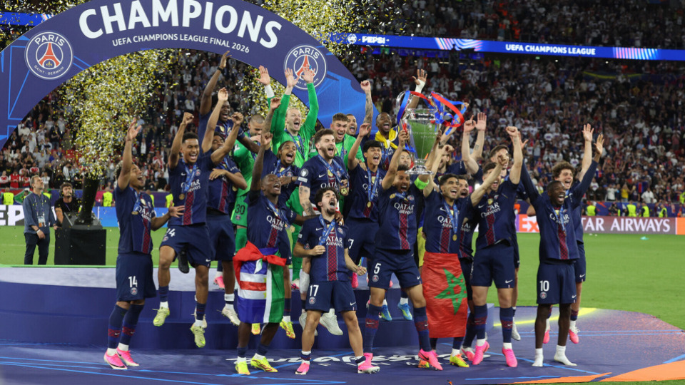

A UEFA Champions League 2026/27 entra em sua fase principal com participantes, confrontos e calendário definidos. A primeira rodada será disputada entre 8 e 10 de setembro, inaugurando uma sequência de oito rodadas que vai até 27 de janeiro de 2027.
Esta será mais uma temporada da competição sob o modelo de liga única com 36 equipes. Cada clube terá oito partidas contra oito adversários diferentes, quatro como mandante e quatro como visitante. A mudança substituiu o antigo sistema de grupos e abriu um novo capítulo na história da Champions League.
Todos os 36 times da Champions League 2026/27
A Inglaterra e a Espanha chegam novamente com forte presença na principal competição de clubes da Europa, acompanhadas por representantes das outras grandes ligas e por equipes que conseguiram suas vagas através das diferentes formas de classificação previstas pela UEFA.
Áustria
- LASK
Azerbaijão
- Sabah
Bélgica
- Club Brugge
Chéquia
- Slavia Praga
Inglaterra
- Arsenal
- Aston Villa
- Liverpool
- Manchester City
- Manchester United
França
- Lens
- Lille
- Paris Saint-Germain
Alemanha
- Bayern de Munique
- Borussia Dortmund
- RB Leipzig
- Stuttgart
Grécia
- AEK Athens
Itália
- Como
- Inter de Milão
- Napoli
- Roma
Países Baixos
- Feyenoord
- PSV Eindhoven
Noruega
- Bodø/Glimt
- Viking
Portugal
- Porto
- Sporting
Eslováquia
- Slovan Bratislava
Espanha
- Atlético de Madrid
- Barcelona
- Real Betis
- Real Madrid
- Villarreal
Turquia
- Fenerbahçe
- Galatasaray
Ucrânia
- Shakhtar Donetsk
A lista reúne alguns dos clubes mais tradicionais do continente e também equipes com presença menos frequente nesse estágio da Champions, combinação que ajuda a dar variedade à fase de liga.
Jogos da primeira rodada da Champions League 2026/27
A primeira será disputada durante três dias consecutivos, com seis partidas em cada data.
Terça-feira, 8 de setembro
- 13h45 — AEK Athens x LASK
- 13h45 — Club Brugge x Aston Villa
- 16h — Borussia Dortmund x Villarreal
- 16h — Porto x Manchester City
- 16h — Lille x Real Betis
- 16h — Real Madrid x Inter de Milão
Quarta-feira, 9 de setembro
- 13h45 — Barcelona x Feyenoord
- 13h45 — Stuttgart x Viking
- 16h — Liverpool x Atlético de Madrid
- 16h — Paris Saint-Germain x Slovan Bratislava
- 16h — Sporting x Galatasaray
- 16h — Napoli x Arsenal
Quinta-feira, 10 de setembro
- 13h45 — Fenerbahçe x Roma
- 13h45 — PSV Eindhoven x Shakhtar Donetsk
- 16h — Como x RB Leipzig
- 16h — Bayern de Munique x Bodø/Glimt
- 16h — Manchester United x Sabah
- 16h — Slavia Praga x Lens
Dois gigantes frente a frente logo na estreia
Um dos principais confrontos da rodada inaugural será entre Real Madrid e Inter de Milão. Além do peso esportivo do jogo, a presença do clube espanhol sempre atrai atenção especial em uma competição profundamente ligada à sua identidade.
O time Merengue construiu uma relação única com o torneio continental e ocupa posição central na própria evolução da competição. A trajetória espanhola, seus títulos, ídolos e diferentes gerações vencedoras fazem parte da história do Real Madrid, tornando cada nova participação europeia mais um capítulo de uma tradição iniciada ainda nas primeiras décadas do torneio.
Napoli x Arsenal também aparece entre os confrontos de maior peso esportivo da abertura. O Liverpool recebe o Atlético de Madrid, enquanto Porto e Manchester City medem forças em Portugal.
O atual Bicampeão
Outro foco natural da nova edição estará sobre o Paris Saint-Germain. O clube francês chega à Champions 2026/27 depois de conquistar as duas últimas edições e vai em busca de um feito que somente o Real Madrid conseguiu, vencer três edições consecutivas.
A decisão de 2026 acrescentou mais um capítulo à ascensão recente do clube no cenário continental com o título contra o Arsenal.
Na rodada de abertura de 2026/27, o PSG terá o Slovan Bratislava como adversário, diante de sua torcida.
Onde assistir à Champions League 2026/27 no Brasil
A competição terá transmissão por diferentes plataformas no Brasil. Os direitos estão divididos entre a Warner Bros. Discovery, por meio da TNT Sports, e o SBT, que mantém a competição na televisão aberta.
A HBO Max será a opção mais completa para acompanhar o torneio, com todos os jogos da Champions League disponíveis ao vivo. Na televisão por assinatura, partidas selecionadas serão exibidas pelos canais TNT e Space.
Na TV aberta, o SBT possui os direitos da Champions League até o fim da temporada 2026/27 e exibirá partidas selecionadas. O +SBT também integra a cobertura dos jogos escolhidos pela emissora.
A estreia já tem transmissão confirmada na TV aberta. Real Madrid x Inter de Milão, um dos principais confrontos da primeira rodada, será exibido pelo SBT e pelo +SBT na terça-feira, 8 de setembro. A transmissão começa às 15h45, no horário de Brasília, com a partida marcada para as 16h.
Assim, as opções de transmissão no Brasil são:
- HBO Max — todos os jogos ao vivo
- TNT — partidas selecionadas na TV por assinatura
- Space — partidas selecionadas na TV por assinatura
- SBT — partidas selecionadas na TV aberta
- +SBT — jogos selecionados transmitidos pelo SBT
Como funciona a fase de liga
O atual regulamento da Champions eliminou os antigos grupos de quatro equipes. Agora, todos os 36 participantes fazem parte de uma única classificação.
Cada clube disputa oito partidas:
- oito adversários diferentes;
- quatro jogos em casa;
- quatro jogos fora;
- confrontos definidos a partir dos potes estabelecidos para o sorteio.
Depois das oito rodadas, a classificação geral determina o destino de cada equipe.
- Do 1º ao 8º lugar — classificação direta para as oitavas de final.
- Do 9º ao 24º lugar — disputa dos playoffs da fase eliminatória.
- Do 25º ao 36º lugar — eliminação.
O modelo aumenta a importância de praticamente todos os jogos. Não basta superar rivais de um pequeno grupo: cada resultado afeta diretamente a posição na tabela única, inclusive na disputa por uma vaga direta nas oitavas de final.
Datas da fase de liga
- 1ª rodada — 8, 9 e 10 de setembro de 2026
- 2ª rodada — 13 e 14 de outubro de 2026
- 3ª rodada — 20 e 21 de outubro de 2026
- 4ª rodada — 3 e 4 de novembro de 2026
- 5ª rodada — 24 e 25 de novembro de 2026
- 6ª rodada — 8 e 9 de dezembro de 2026
- 7ª rodada — 19 e 20 de janeiro de 2027
- 8ª rodada — 27 de janeiro de 2027
A última rodada ganha peso especial porque define quem avança diretamente às oitavas, quais equipes precisarão disputar os playoffs e quem estará eliminado da Champions.
Calendário do mata-mata da Champions League 2026/27
Depois da fase de liga, começa a sequência eliminatória:
- Playoffs da fase eliminatória — 16 e 17 de fevereiro; 23 e 24 de fevereiro de 2027
- Oitavas de final — 9 e 10 de março; 16 e 17 de março de 2027
- Quartas de final — 6 e 7 de abril; 13 e 14 de abril de 2027
- Semifinais — 27 e 28 de abril; 4 e 5 de maio de 2027
- Final — 5 de junho de 2027
A final da Champions League 2026/27 será disputada no Estádio Metropolitano, em Madri, casa do Atlético de Madrid.
O estádio volta a receber a principal decisão do futebol europeu de clubes depois da final de 2019, aumentando ainda mais a presença de Madri na história do torneio.
Uma Champions que une tradição e novos personagens
A edição 2026/27 volta a colocar frente a frente algumas das camisas mais importantes do futebol mundial. Real Madrid, Barcelona, Bayern de Munique, Liverpool, Inter de Milão, Manchester United e Paris Saint-Germain dividem a competição com equipes que tentam construir ou ampliar seu espaço no cenário continental.
A ligação entre passado e presente é justamente uma das forças da Champions. Enquanto gigantes carregam décadas de títulos e partidas históricas, cada temporada cria novos protagonistas, resultados marcantes e campanhas capazes de entrar para a memória da competição.
A corrida começa oficialmente na fase de liga em setembro de 2026 e seguirá até a grande decisão de 5 de junho de 2027, em Madri. Entre uma data e outra, os 36 clubes terão primeiro de sobreviver a oito rodadas de uma classificação única para depois encarar o tradicional caminho eliminatório que transformará apenas um deles em campeão da Europa.